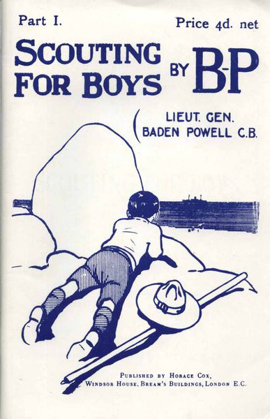

Escultismo para muchachos: un manual de instrucción en buena ciudadanía haciendo vida de campaña (Scouting for Boys: A Handbook for Instruction in Good Citizenship) es el libro fundamental del Movimiento Scout cuyo autor es el General Robert Baden Powell, fundador de dicho movimiento juvenil y cuya primera edición completa apareció en Londres en 1908.
La obra está basada en sus propias aventuras de infancia y juventud, en sus experiencias militares, especialmente como miembro del Cuerpo de Cadetes de Mafeking durante la Segunda Guerra Bóer durante el Sitio de Mafeking y las primeras experiencias scout en el Campamento de Isla Brownsea en Inglaterra. Se trata además del cuarto libro más vendido del siglo XX en el mundo y uno de los más traducidos a todos los idiomas en donde el Movimiento Escultista ha llegado. De las versiones oficiales en castellano la más conocida es la llevada a cabo por el Consejo Interamericano de Escultismo bajo la orientación del ingeniero Jorge Nuñez. Los derechos de la obra están custodiados por la Asociación de Scouts Británicos hasta el año 2011 en el que se cumplen los 70 años de muerte del autor y tiempo en el cual la obra entra en el ámbito de dominio público. El libro contiene todos los elementos básicos que le dan al Movimiento Escultista y que nacieron de la experiencia y de la creatividad del fundador y cuyo método no sólo ha servido para moldear la historia del movimiento juvenil más grande del mundo, sino que ha entrado en el ámbito de la educación y la metodología en otras áreas y campos educativos. Dirigido directamente a los muchachos como actores de sus propias actividades, llama a la responsabilidad de los mismos dentro de la formación de su propia patria, el valor de la familia y el puesto primordial de cada religión. "Yo me imagino que todo muchacho desea ayudar a su país de una u otra manera. Un medio fácil de conseguirlo es hacerse scout",1 comienza el autor en lo que no es otra cosa que las palabras de un adulto de vivida experiencia y encendida vitalidad en la noche de fogata de un campamento.
